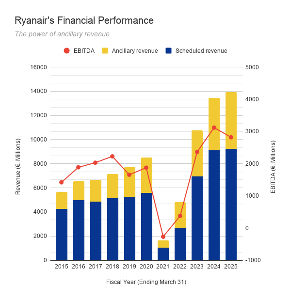
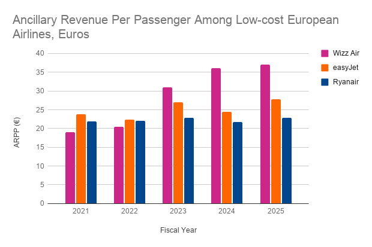

Economy Class: How Ryanair’s Business Model Conquered Europe’s Airline Industry
A common question that is asked in discussions about the airline industry is, "How do they make money?". And a common answer to this question is that they don't. Airlines are known for running on ultra-thin margins on account of their high operating costs and overhead; the global airline industry's cumulative operating profit margin was only 3.9% in 2025. Budget carriers, however, outperform other airlines on this metric significantly. For instance, Europe's leading low-cost carrier (LCC), Ryanair, has a margin hovering around 14% to 16% as of mid-2025. When compared to legacy airlines like Lufthansa or British Airways, this is an extraordinary feat for a young carrier, nevermind the fact that Ryanair also came to define European budget airlines as a whole, breeding its own competitors within a decade of its inception.
It comes as no surprise that Ryanair pursues an aggressive, no-frills flying policy. Those who have heard Michael O'Leary's impassioned opinions on the airline industry and those who purchase from them, know that he is committed to his bottom line. But the impetus for this stretches further back than his promotion to CEO in 1994. In fact, the low-cost business model was introduced by Southwest Airlines in the 1970s. In a bid to sidestep the tight airline regulations at the time and allow more flexibility for price-setting and flight frequency, founders Herbert Kelleher and Rollin King operated solely within Texas, flying between Dallas, Houston, and San Antonio.
Ryanair launched across the pond in 1986, bringing low-cost fares and premium experiences on board their flights to London. They ran the full gamut of in-flight meals, free drinks, and attentive service. However, its main competitors (Aer Lingus, British Airways) were quick to react. Given that these companies had the advantage of scale, Ryanair succumbed to a £2M loss within its first two years of operations.
As CFO of Ryanair, O'Leary visited Southwest headquarters and brought the LCC model back with him, implementing it in 1990. His strategy included purchasing a single fleet of Boeing 737s, increasing flight frequency, and cutting down on amenities. Some LCCs may choose to compete with legacy airlines, promising to offer the best of both worlds (i.e. budget and care). But rather than maintain that balancing act, O'Leary reasoned, Ryanair would be much better off trying to attract more customers through low ticket prices.
This was, in fact, a successful strategy.
Exhibit 1: Financial Performance

Ryanair's financial performance has shown considerable growth and resilience over the past decade, fully recovering from the pandemic downturn to achieve record revenues. This is in no small part due to their ancillary revenues, which have grown 29% since 2015. In recent years, ancillary revenue share has stabilized around 32-34%, cementing non-ticket sales as an indispensable and substantial component of the company's financial structure.
However, the recent combination of slowing revenue growth (3.8%) and a sharp decline in EBITDA (-11.8%) in 2025 signals a shift from the high-growth, high-margin recovery phase into a period where cost control and efficiency will be critical to maintaining or improving profitability.
Exhibit 2: Total Passengers Carried

Throughout the years, Ryanair has managed to become the most popular airline in Europe, having transported 206 million people in 2025, arguably the best recovery among comparable airlines, both budget and legacy, in the post-pandemic landscape. Ryanair's passenger volume is substantially higher than its closest competitors: 57% higher than the second-largest airline, Lufthansa (131.3 million), and more than double the volume of its main budget rival, easyJet (100 million).
This shows that Ryanair has established its lead and has continually accelerated its growth since O'Leary implemented the LCC model, even outpacing the expansion of legacy airlines such as Lufthansa and Air France. This comparison highlights Ryanair's massive scale, which is the key factor driving its high revenues.
Exhibit 3: Ancillary Revenue Per Passenger (ARPP)

Ancillary revenue per passenger (ARPP) is a standard measure for comparing the efficiency of an airline's ancillary strategy across all of its carriers, showing how much an airline makes from each customer without involving ticket revenue: baggage fees, priority boarding costs, in-flight WiFi, and so on. This is the highest-margin revenue, but Ryanair is not a winner here in terms of sheer euro-amount.
It should be noted Ryanair carries far more passengers than Wizz or easyJet. In 2025, easyJet carried half the passengers that Ryanair did that year; Wizz carried less than a third. This dilutes Ryanair's overall high ancillary revenue into a relatively lower per-person value, but what is interesting is this metric's stability compared to other airlines.
Ryanair's ancillary revenue has hovered around €22 per person for the past five years. Wizz's higher ARPP suggests they are better at upselling or charging higher prices for ancillary items to their smaller passenger base, achieving a greater revenue yield per person. Ryanair, by contrast, focuses on driving the highest possible passenger numbers (i.e. volume) while maintaining a lower, but very stable, per-person yield.
As Wizz experiences stronger passenger growth, its ARPP presses downwards. As the second-largest LCC in Europe, easyJet provides us with a slightly more comparable example, but Ryanair's sheer size makes this an imbalanced playing field.
Nonetheless, the extraordinary stability of Ryanair's ARPP suggests a few things. First, that Ryanair is organized when it comes to ancillary fee integration: their fees for baggage, seat selection, priority boarding, and so on, are consistently applied across all of their routes. Ryanair has also maximized their ancillary pricing structure in this regard. Their ancillary fees hit a comfortable middle ground, which is to say that they are high enough to generate significant revenue, but still low enough to not deter the vast majority of their customer base from flying with them. This also suggests that customer behavior regarding ancillary purchases is predictable and has not been significantly influenced by market changes or competitive pressure (e.g. from other airlines).
Ryanair's passengers more than doubled from 97.1 million in 2022 to 206.5 million (estimated) in 2025. The fact that ARPP ranged from a narrow €21.80 to €22.85 during this period means their total ancillary revenue is increasing at the same rate as their passenger count, indicating that the airline has handled its rapid growth with commendable efficiency.
Contrary to the old adage, it is possible for an airline to make money. Ryanair's high margins in particular are generated by maximizing the sheer number of customers, which creates large total ancillary revenues even with a lower, but consistent, per-passenger yield. In other words, the company's success is defined by scale and the efficient monetization of that scale.
In 2025, the average cost of a Ryanair flight was €44, comparable to a two-hour regional train ticket. Due to Ryanair's dynamic booking system, where fares remain relatively high until the booking window is about to close, fares can be pushed down to as little as €20.
While these fares may seem unsustainable, Ryanair generates profit through ancillary fees, keeping ticket prices low enough to attract travellers. Operationally, the vast majority of their flights are short-haul; shorter travel times allow planes to make multiple trips in a day, creating more opportunities for revenue. By utilizing secondary or regional airports for these trips (mainly Dublin, London Stansted, and Milan Bergamo), Ryanair also minimizes landing fees and increases turnaround time, resulting in even lower costs for the consumer.
The company has achieved enormous success in scaling its business using these tactics, but not without blowback. A 2024 YouGov poll about the Ryanair brand shows a -32% 'impression' score and -40% 'quality' score, but a positive 24.8% 'consideration' score, meaning that although customers have a very poor opinion of the airline, many of them would still consider booking their next flight with Ryanair (note that the average consideration score for other airlines is 14.1%). Such is the power of their competitive pricing system.
In a way, Ryanair understands that what passengers value more than the journey is what awaits them at their destination: a music festival, a sporting event, a chance to see friends and family, and so on. This opens up to an interesting aspect of consumer behavior, where the value proposition is not in the product being sold, but in its latent potential. The airline certainly capitalized on this in the years following the pandemic, when the prospect of travel was irresistible for many. As the landscape stabilizes, however, Ryanair will need a strategy to retain their competitive pricing: perhaps through an increase in passenger volume, or an even further optimization of its high-margin revenue streams to sustain the current level of profitability and fend off its budget competitors.